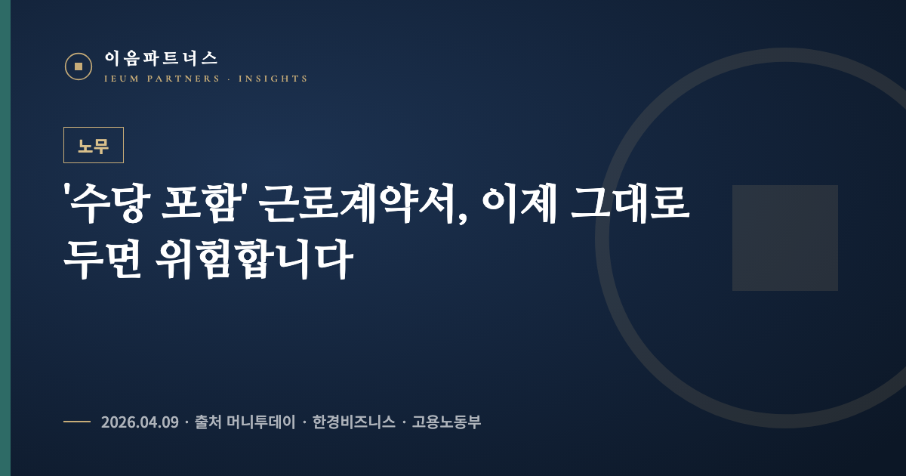

'수당 포함' 근로계약서, 이제 그대로 두면 위험합니다

월급에 연장·야간수당이 다 들어 있다는 계약, 이른바 포괄임금 약정을 관행처럼 써 온 회사가 적지 않습니다. 고용노동부는 2026년 4월 9일부터 포괄임금 오남용 방지 지도 지침을 시행해, 이런 약정이 있어도 실제 일한 시간만큼 수당을 줘야 한다는 원칙을 분명히 했습니다. 이 글에서는 지침의 핵심과 첫 감독 결과, 대표님이 점검할 것을 정리합니다.
익명 신고가 들어온 사업장은 감독 대상으로 관리되기 때문에, 문제가 드러나는 시점을 회사가 고르기 어렵습니다. 우리 회사 계약서와 급여명세서가 지침에 맞는지 궁금하다면 카카오톡 채널 이음파트너스에서 함께 확인해 보실 수 있습니다.
포괄임금, 무엇이 문제였나
포괄임금은 연장·야간·휴일수당 등을 기본급에 넣어 한꺼번에 주는 방식입니다. 법에 있는 제도는 아니지만 연장근로가 잦거나 근무시간을 세기 어려운 사업장에서 관행처럼 써 왔고, 장시간 노동과 저임금을 굳힌다는 지적을 받아 왔습니다(머니투데이).
지침의 핵심은 무엇인가
지침은 새 법이 아니라 현행 근로기준법과 판례를 바탕으로 회사가 지켜야 할 기준을 정리한 것입니다(한경비즈니스). 따라서 법 개정을 기다릴 것 없이 지금 바로 적용되며, 핵심은 다음과 같습니다.
| 구분 | 내용 |
|---|---|
| 명세서 기재 | 임금대장과 임금명세서에 기본급과 각종 수당을 나눠 적기 |
| 수당 계산 | 실제 근로시간에 따라 연장·야간·휴일근로수당을 계산해 지급 |
| 정액 지급 | 기본급과 수당을 나누지 않는 정액급제, 수당을 뭉뚱그린 정액수당제는 원칙적으로 금지, 이미 맺었더라도 실제 시간 기준 수당보다 적으면 차액 지급 |
| 고정OT 약정 | 일정 시간분 수당을 미리 정해 줘도 실제 근로시간과 비교해 모자라면 차액 지급 |
| 미지급 시 | 차액을 주지 않으면 임금체불로 보고 엄중 처리 |
근로시간을 세기 어려운 사업장에는 사업장 밖 간주근로시간제·재량근로시간제(실제 시간 대신 미리 정한 시간을 일한 것으로 보는 제도) 같은 현행 특례 활용을 권했고, 개선 의지가 있는 사업장에는 컨설팅도 연계합니다(머니투데이).
실제 감독에서는 무엇이 적발됐나
고용노동부가 포괄임금 오남용 의심 사업장 101곳을 감독한 결과, 포괄임금을 쓰던 79곳 가운데 34곳(43.0%)에서 수당 미지급이 적발됐고 체불액은 4억 4,800만 원이었습니다. 연장근로 한도 위반도 34곳, 근로시간 기록·관리 위반도 27곳이었습니다(고용노동부 보도자료).
김영훈 장관은 “포괄임금이라는 이유로 법에서 정한 노동의 대가가 부정되어서는 안 된다”고 강조했습니다(고용노동부 보도자료). 노동부는 익명신고센터 제보가 잦은 지역을 골라 연말까지 권역별 감독을 이어 갈 계획입니다. 포괄임금을 법으로 금지하는 입법도 지침 발표 당시 국회에서 추진 중이었으므로 최신 진행 상황을 함께 확인해 보시길 권합니다.
대표님이 지금 확인할 것
- 근로계약서에 제 수당 포함 같은 문구만 있고 기본급과 수당 금액이 나뉘어 있지 않은지
- 임금명세서에 기본급과 연장·야간·휴일수당이 항목별로 따로 적혀 있는지
- 출퇴근과 연장근로 시간이 기록되는지, 그 시간으로 계산한 법정수당이 실제 지급액보다 많지 않은지
- 고정OT를 쓴다면 매달 실제 시간과 비교해 차액을 정산하고 있는지
참고한 자료
- "포괄임금이어도 일한 만큼 돈 줘야"…노동부, 원칙적 금지 시행 — 머니투데이 (2026.04.08)
- 4월 9일부터 시행···'일한 만큼 정당한 보상' 문화 확산 기대 — 한경비즈니스 (2026.04.08)
- 공짜 노동 근절을 위한 포괄임금 오남용 1차 기획감독 결과 발표 — 고용노동부 (2026.05.28)
포괄임금 약정은 계약서 문구보다 실제 근로시간 기록이 더 중요해졌습니다. 우리 회사 급여 구조가 지침에 맞는지 궁금하다면 카카오톡 채널 이음파트너스로 문의해 주세요.
※ 이 글은 일반적인 정보 제공을 위한 것으로, 개별 사안은 세무사·노무사 등 전문가와 함께 확인하시기 바랍니다.